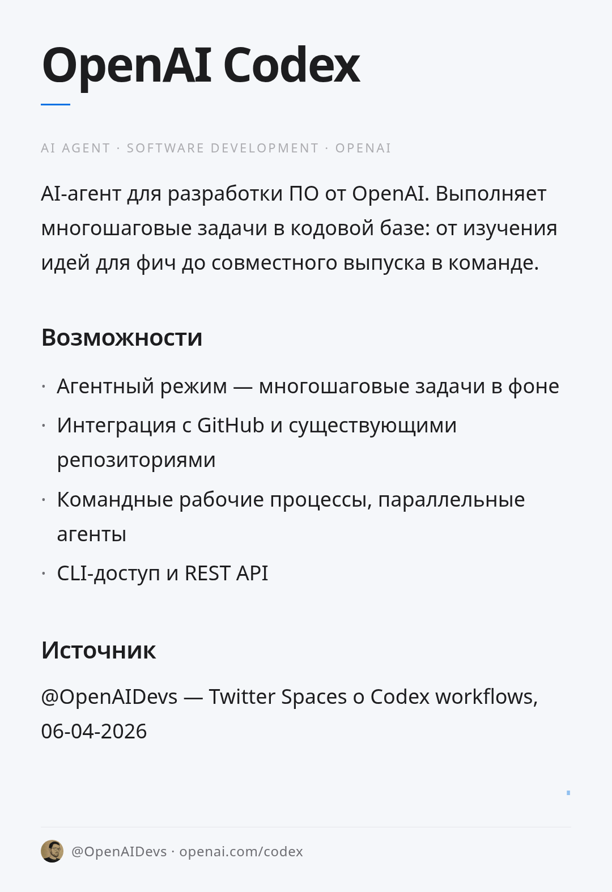

OpenAI Codex
Тип: AI-агент для разработки программного обеспечения
Разработчик: OpenAI
Статус: В разработке / бета
Описание
OpenAI Codex — агент на основе больших языковых моделей, предназначенный для помощи разработчикам: от генерации кода по описанию до совместного выпуска фич в команде. Codex может выполнять многошаговые задачи в кодовой базе: изучать идеи для фич, писать и рефакторить код, проходить тесты и пушить изменения.
Ключевые возможности
- Выполнение многошаговых задач разработки в фоновом режиме (агентный режим)
- Интеграция с существующими кодовыми базами через GitHub
- Поддержка командных рабочих процессов — несколько агентов параллельно
- CLI-доступ и API
Ссылки
Источник
- @OpenAIDevs, 06-04-2026 — обсуждение рабочих процессов Codex в Twitter Spaces